ระบบฉบับนี้เป็น decision-support prototype ที่จำลองคิวผู้โดยสารที่จุดตรวจความปลอดภัยของสนามบิน และเปรียบเทียบมาตรการต่าง ๆ เช่น เปิดเลนเพิ่ม การเปลี่ยนเส้นทางผู้โดยสาร หรือมาตรการผสม ก่อนให้ผู้ปฏิบัติงานอนุมัติ ปฏิเสธ หรือแก้ไข โดยทุกการตัดสินใจถูกบันทึกลง audit trail
สิ่งที่ระบบทำได้จริงในเวอร์ชันนี้:
สิ่งที่ยังไม่มีในเวอร์ชันนี้:
| ส่วน | สถานะ | หมายเหตุ |
|---|---|---|
| แบบจำลองคิวจุดตรวจ 2 จุด (Security A/B) | ทำงานแล้ว | ค่าเริ่มต้นและอัตราบริการเป็น ASSUMPTION |
| การพยากรณ์ +15, +30, +60 นาที | ทำงานแล้ว | พยากรณ์แบบ fluid ไม่ใช่ ML |
| เปรียบเทียบทางเลือกและข้อจำกัดทรัพยากร | ทำงานแล้ว | ทางเลือกที่ขาดทรัพยากรจะถูกปฏิเสธ |
| Human decision และ audit trail | ทำงานแล้ว | บันทึกแบบ transactional และมีเวอร์ชัน |
| Accessible route และ Safe Time | ทำงานแล้ว | กราฟเส้นทางเป็นตัวอย่าง ไม่ใช่แผนผังจริงของ BKK |
| Copilot แบบไม่ใช้ LLM | ทำงานแล้ว | รองรับหัวข้อภาษาอังกฤษจำกัด |
| ข้อมูลสาธารณะ (OurAirports, Open-Meteo, OpenSky) | ดึงและแคชได้ | ใช้เป็นบริบท ไม่ใช่ข้อมูลการดำเนินงาน |
| Benchmark ML เทียบ baseline | ทำงานแล้ว | ไม่มีโมเดลถูกนำขึ้นใช้งาน |
| ภาษาไทยเต็มรูปแบบ | ยังไม่ครบ | มีโครงสร้างข้อความไทยสำหรับ CTA และ Safe Time |
| ข้อมูลกระเป๋า | ไม่มี | อยู่ในเวอร์ชันถัดไป |
| ป้าย | ความหมาย |
|---|---|
| REAL_PUBLIC | ข้อมูลสาธารณะจริง ใช้เป็นบริบทหรือ benchmark ไม่ใช่ข้อมูลการดำเนินงานของสนามบิน |
| SYNTHETIC | ข้อมูลที่สร้างขึ้นด้วยการกำหนด seed สำหรับเดโม ไม่ใช่บันทึกจริงของสายการบินหรือสนามบิน |
| ASSUMPTION | ค่าที่สมมติ เช่น อัตราบริการ โครงสร้างเส้นทาง และข้อจำกัดในการดำเนินงาน |
| DERIVED | ค่าที่คำนวณจากข้อมูลต้นทาง ต้องเก็บ lineage และสูตร |
| SIMULATED | ผลจาก engine เช่น คิว การพยากรณ์ และคำแนะนำ |
| ชุดข้อมูล / ค่า | ป้าย | แหล่งและขอบเขต |
|---|---|---|
| ข้อมูลสนามบินจาก adapter | REAL_PUBLIC | OurAirports ข้อมูลสาธารณะ ไม่รับประกันความถูกต้อง |
| พยากรณ์อากาศ (ถ้าเปิดใช้) | REAL_PUBLIC | Open-Meteo เป็นการพยากรณ์ของแบบจำลอง ไม่ใช่เซ็นเซอร์ที่สนามบิน |
| ตำแหน่งอากาศยาน (ถ้าเปิดใช้) | REAL_PUBLIC | OpenSky REST API ใช้ได้เฉพาะตำแหน่งและสถานะการบิน |
| ชุด fixture สนามบิน (TWT / ZZTW) | SYNTHETIC | รหัสเป็นตัวอย่าง ไม่ใช่รหัสที่จดทะเบียนจริง พิกัดโดยประมาณ |
| เที่ยวบิน คิว เลน ผู้โดยสาร การจัดการ | SYNTHETIC | ข้อมูลที่ seed ไว้ ห้ามอธิบายว่าเป็นข้อมูลจริง |
| โครงสร้างเส้นทาง อัตราบริการ เวลาข้ามจุด และ staff | ASSUMPTION | ผังจำลองที่ไม่ใช่ข้อมูลจาก BKK |
| ค่าพยากรณ์คิว ผลการแทรกแซง Safe Time และ KPI proxy | SIMULATED | ทุกหน้าจอและ response มีข้อความว่าเป็นผลจำลอง |
| ความเชื่อมั่น 80% (ข้อมูลสด) และ 35% (ข้อมูลเก่า) | ASSUMPTION | เป็นฮิวริสติก ไม่ได้ calibrate |
ข้อมูลเชิงปฏิบัติการในเดโมเป็น SYNTHETIC และ SIMULATED เป็นหลัก OpenSky ไม่ได้ใช้นับจำนวนผู้โดยสาร สถานะการขึ้นเครื่อง ตารางเที่ยวบินฉบับเต็ม เหตุยกเลิก หรือคิว หากการดึงข้อมูลสาธารณะล้มเหลว ระบบจะใช้แคชเดิมพร้อมป้ายว่าเก่า หรือใช้ข้อมูลสังเคราะห์ โดยไม่เปลี่ยนป้ายข้อมูลสังเคราะห์เป็นข้อมูลจริง
ข้อมูลสาธารณะ (OurAirports / Open-Meteo / OpenSky)
→ แคชพร้อมป้ายที่มา
ตัวสร้างข้อมูลสังเคราะห์ (กำหนด seed ได้)
→ PostgreSQL
→ FastAPI (RBAC สำหรับเดโม / การตรวจสอบข้อมูล)
→ พยากรณ์ fluid รายนาที (+15 / +30 / +60)
→ จำลองคิว FIFO แบบ cohort สองจุดตรวจ
→ การให้คะแนนแบบมีข้อจำกัด
→ มนุษย์ accept / reject / override
→ สถานะเดโมแบบมีเวอร์ชัน
→ กราฟเส้นทางที่เข้าถึงได้ → Safe Time และการวางแผนใหม่
→ audit snapshot และการวัดผล → การประเมินแบบ offline / เกณฑ์เลื่อนระดับโมเดล
→ Copilot แบบมีโครงสร้าง (มี fallback ที่ไม่ใช้ LLM เสมอ)
→ UI ฝั่ง operations และ passenger
| ส่วนประกอบ | ตัดสินใจอะไร | หลักฐาน | เมื่อผิดพลาด / เจ้าของ |
|---|---|---|---|
| Forecast | ควรเตรียมกำลังที่จุดไหน | arrival profile ที่ freeze ไว้ คิวปัจจุบัน และเลนที่เปิด | ทำเครื่องหมายข้อมูลเก่า บล็อกการดำเนินการ ผู้ปฏิบัติงานเป็นเจ้าของการตอบสนอง |
| Simulator | เลนหรือการเปลี่ยนเส้นทางแบบใดเหมาะสม | cohort และ horizon เดียวกันสำหรับทุกการเปรียบเทียบ | ปฏิเสธการร้องขอทรัพยากรที่ไม่ถูกต้อง เก็บ No Action ไว้เสมอ |
| Scorer | ทางเลือกที่ให้ประโยชน์ดีที่สุดภายใต้ staff และการเดิน | สูตรเปิดเผย น้ำหนักไม่ติดลบและปรับได้ | ไม่แนะนำเมื่อข้อมูลเก่า |
| Journey | ผู้โดยสารควรใช้เส้นทางใดตอนนี้ | กราฟมีทิศทาง เวลารอ deadline และ buffer | ไม่แสดงเส้นทางที่เข้าไม่ถึง แสดงคำเตือนข้อมูลเก่า เป็นคำแนะนำเท่านั้น |
| Audit | การตัดสินใจนั้นช่วยหรือไม่ | snapshot ของ input/output เหตุผลของมนุษย์ และการสังเกตแบบจำลองภายหลัง | บันทึกแบบ transaction ไม่ promote โมเดลโดยอัตโนมัติ |
| Copilot | อธิบายผลของ engine | อ้างอิงเฉพาะค่าที่คำนวณได้ | ใช้ template ที่ไม่ใช้ LLM เป็นค่าเริ่มต้น |
airport-timetwin/ backend/app/ ORM, seed, engine ที่กำหนดผลได้แน่นอน, FastAPI backend/migrations/ Alembic backend/tests/ conservation, decisions, stale-data, API frontend/src/ React views, styles, API client frontend/e2e/ browser integration และ mobile tests data/synthetic/ CSV ที่สร้างขึ้นและประวัติ training data/seeds/ สถานการณ์ peak ที่ทำซ้ำได้ และ acceptance config data/raw/ แคชสาธารณะ (ไม่อยู่ใน git) scripts/ ingestion, generation, seeding, demo ml/evaluation/ การประเมินเชิงเวลาเทียบ baseline infra/ Docker Compose docs/ สถาปัตยกรรม ERD พจนานุกรม การประเมิน runbook
Q(t+1) = max(0, Q(t) + arrivals(t) − lanes × service_rate)
| ตัวชี้วัด | วิธีคำนวณ | ข้อควรระวัง |
|---|---|---|
| เวลารอ P95 | P95 แบบถ่วงน้ำหนักตามผู้โดยสารของ cohort ที่ FIFO | ไม่ใช่เวลารอของทุกคนในสนามบิน |
| Passenger-minutes saved | ผลต่างของพื้นที่ใต้คิวของเครือข่าย ลบด้วยต้นทุนการเดินจากการเปลี่ยนเส้นทาง | เป็นผลจำลอง ไม่ใช่ประโยชน์ที่วัดได้ในสนามบิน |
| ความเสี่ยง (risk) | สัดส่วนของผู้โดยสารที่เวลารอเกินงบ 35 นาทีต่อจุดตรวจ (สมมติฐาน) | ไม่ใช่ความน่าจะเป็นที่พลาดการขึ้นเครื่องของเที่ยวบินใดเที่ยวบินหนึ่ง |
| Safe Time | เวลาถึงเกต − ระยะเดิน − เวลาผ่านจุดตรวจ | ใช้ในกรณีตัวอย่างเท่านั้น |
มีการแยกสัดส่วนสาเหตุของเวลารอ +30 นาที เทียบกับสถานการณ์ปกติและเลนห้าเลน โดยใช้ Shapley decomposition สองปัจจัย ผลนี้เป็น การอธิบายจากแบบจำลอง (model counterfactual) ไม่ใช่การพิสูจน์เชิงเหตุผลจากข้อมูลจริง และไม่ได้หมายความว่าการเพิ่มเจ้าหน้าที่ทำได้จริงในทางปฏิบัติ
| รายการ | ค่า | ป้าย |
|---|---|---|
| เวลาเริ่มต้นของเดโม | 2026-09-12 17:00 ICT | ASSUMPTION |
| คิวเริ่มต้น Security A / B | 96 / 12 คน | ASSUMPTION |
| อัตราบริการ | 2 คนต่อนาทีต่อเลน | ASSUMPTION |
| จำนวนเลนที่เปิด | A 4 จาก 5 เลน, B 3 เลน | ASSUMPTION |
| ผู้มาถึงช่วง peak ที่ A | 15.2 คนต่อนาที 30 นาที, ต่อด้วย 9 (15 นาที) และ 5 | SYNTHETIC |
| ผู้มาถึงปกติที่ A / ที่ B | 5 / 3 คนต่อนาที | SYNTHETIC |
| เจ้าหน้าที่ต่อเลนที่เปิด | 2 คน (สำรอง 4 คน) | ASSUMPTION |
| เพดานการเปลี่ยนเส้นทาง | 30% | ASSUMPTION |
| ต้นทุนการเดินเพิ่มเมื่อเปลี่ยนเส้นทาง | 4 นาทีต่อคน | ASSUMPTION |
| เพิ่มความจุจากเจ้าหน้าที่ 1 คน | 0.25 คนต่อนาที (ทดสอบความไว) | ASSUMPTION |
| เดินเพิ่มเมื่อเปลี่ยนเกต (ทางเข้าถึงได้) | 23 นาที | ASSUMPTION |
| งบเวลาที่ตรวจต่อจุด | 35 นาที | ASSUMPTION |
| ความเชื่อมั่นพยากรณ์ | 80% ข้อมูลสด / 35% ข้อมูลเก่า | ASSUMPTION (ไม่ได้ calibrate) |
| ช่วงความไม่แน่นอน | ±(15% ของค่าประมาณ + 2 นาที) กว้างขึ้นเมื่อข้อมูลเก่า | ASSUMPTION |
| ผู้โดยสารต่อเที่ยวบินที่จำลอง | 145 คน | ASSUMPTION |
| ประสิทธิภาพที่ใช้ตอนวัดผลซ้ำ | 97% ของความจุที่วางแผน | ASSUMPTION |
ชุดทดสอบแบ่ง 70% สำหรับ training และ 30% สำหรับ testing พร้อม embargo 60 นาที ไม่สุ่มลำดับ (ข้อมูลจาก docs/evaluation.md)
| Model | Horizon (นาที) | MAE | RMSE | P90 error | Precision | Recall | F1 | Interval coverage |
|---|---|---|---|---|---|---|---|---|
| persistence | 15 | 5.97 | 8.13 | 11.32 | 0.96 | 0.95 | 0.95 | 0.67 |
| moving_average | 15 | 8.81 | 11.41 | 17.14 | 0.93 | 0.93 | 0.93 | 0.52 |
| fluid | 15 | 2.20 | 5.07 | 3.96 | 0.99 | 0.99 | 0.99 | 0.94 |
| linear | 15 | 4.27 | 6.67 | 12.12 | 0.98 | 1.00 | 0.99 | 0.88 |
| random_forest | 15 | 1.75 | 4.32 | 3.58 | 0.99 | 1.00 | 0.99 | 0.97 |
| persistence | 30 | 11.70 | 14.96 | 22.70 | 0.91 | 0.91 | 0.91 | 0.42 |
| moving_average | 30 | 14.41 | 18.20 | 28.35 | 0.89 | 0.88 | 0.89 | 0.36 |
| fluid | 30 | 4.57 | 8.43 | 9.28 | 0.98 | 0.98 | 0.98 | 0.84 |
| linear | 30 | 5.91 | 8.75 | 15.69 | 0.95 | 0.99 | 0.97 | 0.77 |
| random_forest | 30 | 3.21 | 6.37 | 7.36 | 0.98 | 1.00 | 0.99 | 0.93 |
| persistence | 60 | 22.56 | 28.06 | 44.99 | 0.82 | 0.81 | 0.82 | 0.26 |
| moving_average | 60 | 25.17 | 31.11 | 50.36 | 0.80 | 0.79 | 0.80 | 0.23 |
| fluid | 60 | 10.34 | 16.08 | 24.34 | 0.96 | 0.95 | 0.96 | 0.60 |
| linear | 60 | 9.34 | 12.99 | 21.84 | 0.90 | 0.99 | 0.94 | 0.60 |
| random_forest | 60 | 6.13 | 9.79 | 16.35 | 0.96 | 0.98 | 0.97 | 0.80 |
ชุดข้อมูลคือ CBP terminal/hour จำนวน 12,186 รายการ จาก JFK, LAX และ SFO ช่วงมกราคม–มีนาคม 2025 มี 12,178 รายการที่จำนวนเคาน์เตอร์ที่เปิดเป็นบวกและเข้าสู่ benchmark
data/cache/queue-benchmark.jsonข้อสำคัญที่สุดของส่วนนี้: ผลลดลง 61%, 78%, 74% และ 50% ที่เคยเขียนว่า "measured" ได้มาจากการคูณค่าพื้นฐานด้วยสัมประสิทธิ์ที่กำหนดไว้ใน scripts/experiments/generate_validation_pack.py ไม่ได้เกิดจากการวัดหรือการค้นพบของระบบ
ค่า baseline ของแต่ละ episode คือ coordination 18.0 วินาที และ reconciliation 14.0 วินาที คูณด้วย severity, jitter และ failure penalty (1.18 เมื่อมีการ inject ความผิดพลาด)
| เงื่อนไข | × coordination | × reconciliation | × detect | traceability (%) | verified (%) | risk (proxy) |
|---|---|---|---|---|---|---|
| BASELINE | 1.00 | 1.00 | 1.00 | 42.0 | 0.0 | 1.00 |
| SHARED_DATA | 0.62 | 0.64 | 0.70 | 76.0 | 52.0 | 0.82 |
| ONE_TRUSTX | 0.44 | 0.29 | 0.45 | 100.0 | 85.7 | 0.75 |
| ONE_TRUSTX_AI | 0.39 | 0.22 | 0.26 | 100.0 | 85.7 | 0.50 |
หมายเหตุ: ค่า traceability, verified และ risk เป็นค่าคงที่ที่กำหนดในแต่ละเงื่อนไข ไม่ได้คำนวณจากข้อมูล ค่า gt_match ในโค้ดก็เป็นค่าที่กำหนดเช่นกัน
| ตัวชี้วัด | BASELINE | ONE TRUSTX + AI | การเปลี่ยนแปลง |
|---|---|---|---|
| Coordination time | 19.66 วินาที | 7.67 วินาที | ลด 61% |
| Reconciliation time | 15.29 วินาที | 3.36 วินาที | ลด 78% |
| Risk visibility time | 45.88 วินาที | 11.93 วินาที | ลด 74% (เร็วขึ้นประมาณ 34 วินาที) |
| Event traceability | 42.0% | 100.0% | ค่าที่กำหนดในเงื่อนไข |
| Event verification rate | 0.0% | 85.7% | ค่าที่กำหนดในเงื่อนไข |
| Delay risk proxy | 1.00 | 0.50 | ลด 50% (proxy ที่กำหนดไว้) |
evaluation.md เขียนว่า "measured coverage" และ "measured rule pass rate" ซึ่งไม่ตรงกับโค้ด ควรแก้เป็น "ค่าที่กำหนดไว้ในตัวสร้างข้อมูล" ก่อนนำไปอ้างอิงเป้าหมายของ MVP ถูกเก็บไว้ในไฟล์ตั้งค่า data/seeds/acceptance.json ซึ่งเป็นเกณฑ์ตรวจสอบ ไม่ใช่กลไกที่ปรับผลจำลองให้ผ่าน
| เป้าหมาย | ค่าเป้า | ผล (fluid baseline บนข้อมูลสังเคราะห์) | สถานะ |
|---|---|---|---|
| MAE ของคิว | ≤ 5 นาที | ที่ 30 นาที 4.57 นาที ที่ 60 นาที 10.34 นาที | ผ่านที่ 30, ไม่ผ่านที่ 60 |
| Congestion recall | ≥ 0.80 | 0.98 ที่ 30 นาที, 0.95 ที่ 60 นาที | ผ่าน |
| Warning lead ของการเตือนครั้งแรก | ≥ 15 นาที | มัธยฐาน 14 นาที | ไม่ผ่าน |
ผลจาก scripts/assess_acceptance.py บันทึกใน docs/acceptance-results.json ระบบตรวจว่าเป้าหมายใดผ่านหรือไม่ และไม่ปรับเกณฑ์ให้ผ่าน
| รายการตรวจ | ผลที่บันทึก (ตามวันที่ที่ระบุในเอกสารต้นทาง) |
|---|---|
| Ruff lint และ format (Python) | ผ่าน |
| Backend behavior และ API tests | 16 ผ่าน (SQLite แยก) ต่อมาระบุ 18 ผ่าน รวมการทดสอบ conservation ของจำนวนผู้ออกเดินทาง |
| Frontend ESLint, Prettier และ TypeScript/Vite build | ผ่าน |
| Frontend unit tests | 2 ผ่าน |
| Browser end-to-end (desktop และ mobile 390 × 844) | 13 ผ่านในชุดล่าสุด รวม keyboard, reduced motion และ mobile overflow |
| SQLite Alembic migration | ผ่าน ต่อมา PostgreSQL current = 001 (head) |
| PostgreSQL concurrent decisions | การอนุมัติพร้อมกัน: 200 สำเร็จ 1 รายการ, ซ้ำได้ 409 |
| Public ingestion | OurAirports, Open-Meteo และ OpenSky ดึงข้อมูลเมื่อ 2026-09-12 ประมาณ 17:07 UTC พร้อมเก็บ metadata |
| npm audit | 0 ช่องโหว่ที่รายงาน |
| CLI demo ที่ทำซ้ำได้ | เลือกทางเลือกผสม ประหยัดได้ 10,770.72 passenger-minutes (จำลอง) และกรณี gate 34 → 11 |
| PostgreSQL / Docker | Build และ start ผ่าน API ตอบ healthy |
เอกสารต้นทางระบุว่าการทดสอบ backend มีคำเตือนจาก Starlette/httpx ที่เลิกใช้แล้ว ไม่ใช่ข้อผิดพลาดของแอป รายการที่ยังไม่ได้ตรวจ: การยืนยันตัวตนจริง การเชื่อมระบบสนามบินจริง การรับรอง WCAG การทดสอบ load การบังคับนโยบายการเก็บข้อมูล และ high availability
ควรพูด: ระบบใช้ข้อมูลสาธารณะเป็นบริบท และใช้สถานการณ์สังเคราะห์ที่กำหนดได้ เพื่อสาธิตการเปรียบเทียบมาตรการจัดการคิวอย่างโปร่งใสและตรวจสอบย้อนหลังได้ ผลทั้งหมดเป็นผลจำลอง
เชื่อถือได้ในฐานะ prototype ที่แสดงกลไกการจำลอง การเปรียบเทียบทางเลือก ข้อจำกัดทรัพยากร และการตรวจสอบย้อนหลังที่ทำซ้ำได้ แต่ยังไม่ควรใช้ตัวเลขเป็นผลปฏิบัติการจริง จนกว่าจะมี aggregate checkpoint telemetry จากสนามบิน การ calibrate การทดสอบเชิงเวลาบนข้อมูลจริง การตรวจความปลอดภัย และ pilot ที่มนุษย์อนุมัติ
ข้อมูลผู้โดยสารใน MVP เป็นตัวระบุนิรนามที่สร้างขึ้นเท่านั้น ไม่มีหนังสือเดินทาง เลขบัตรประชาชน ชื่อ ข้อมูลติดต่อ embedding ของใบหน้า หรือเส้นทางการเดินทางส่วนบุคคล แถวใน itinerary เป็นข้อมูลสังเคราะห์ ไม่ใช่ข้อมูลส่วนบุคคลจริง
.env ถูก ignore ใน git| บทบาท | สิทธิ์ |
|---|---|
| AIRPORT_OPERATOR | แก้ไขได้ |
| ADMIN | แก้ไขได้ |
| VIEWER | อ่านอย่างเดียว |
| AIRLINE_OPERATOR | อ่านอย่างเดียว |
| GROUND_HANDLER | อ่านอย่างเดียว |
Header ของบทบาทปลอมได้โดยตั้งใจ ห้ามเปิดการยืนยันตัวตนแบบเดโมนี้สู่อินเทอร์เน็ต หากตั้ง DEMO_MODE=false การแก้ไขจะถูกปิดจนกว่าจะติดตั้ง identity provider จริง
การ accept, reject หรือ override ต้องมีเหตุผล snapshot เก็บเวอร์ชันของ input ผลของ engine และที่มา audit เก็บผู้กระทำ การตัดสินใจ การกระทำ และค่าความคลาดเคลื่อนของการวัด ข้อมูลเก่าจะบล็อกการยอมรับคำแนะนำและการจำลองแบบกำหนดเอง ตัวตรวจเวอร์ชันป้องกันไม่ให้คำแนะนำเก่าถูกนำไปใช้หลังมีการกระทำอื่น การส่งซ้ำได้ 409 ระบบไม่มีการเชื่อมต่อกับระบบปฏิบัติการจริง จึงไม่มีการสั่งงานอัตโนมัติ และความล้มเหลวของบริการไม่สามารถหยุดการดำเนินงานของสนามบินได้
PDPA เป็นงานด้านการกำกับดูแลในขั้นการผลิตจริง ไม่ใช่การอ้างว่าผ่านการปฏิบัติตามกฎหมาย ก่อนใช้ข้อมูลส่วนบุคคลต้องมีการพิจารณาทางกฎหมาย กำหนดวัตถุประสงค์และฐานทางกฎหมาย ลดฟิลด์ที่เก็บให้น้อยที่สุด กำหนดระยะเวลาเก็บ ออกแบบขั้นตอนเข้าถึงและลบข้อมูลตามที่เกี่ยวข้อง ประเมินผู้ประมวลผลและการส่งข้อมูลข้ามประเทศ และจัดทำแผนรับมือเหตุละเมิด MVP นี้ไม่มีข้อสรุปทางกฎหมาย
ยังไม่ได้ตรวจสอบ: การเก็บรักษาข้อมูลจริง High availability การ restore จาก backup การวิเคราะห์ภัยคุกคาม การเฝ้าระวังการบุกรุก และ penetration test ห้ามเผยแพร่เดโมนี้ในฐานะระบบ production หลายผู้ใช้ที่ปลอดภัย
ทุกเรคคอร์ดมี id และ source_type เวลาเป็น UTC ระยะเดินและเวลารอเป็นนาที ระยะทางและความสูงเป็นเมตร ข้อมูล fixture ใช้ SYNTHETIC และผลจาก engine ใช้ SIMULATED ค่า null หมายถึง "ไม่ได้สังเกต" ไม่ใช่ศูนย์ JSONB ใช้เฉพาะ operational_events.metadata สำหรับ snapshot ที่มีเวอร์ชันและ payload ที่ยืดหยุ่น ค่าการวัดอื่น ๆ เป็นคอลัมน์ที่มีชนิดข้อมูลชัดเจน
flights ──< aircraft_positions flights ──< baggage_events flights ──< gate_events flights ──< ground_handling flights ──< passenger_journey checkpoint ──< lane_status checkpoint ──< passenger_flow airports ──< weather operational_events ──< predictions predictions ──< recommendations ──< intervention_results predictions ──< audit ──> operational_events
| ตาราง | หน้าที่ | ฟิลด์สำคัญ |
|---|---|---|
| airport_graph | โหนดและ edge ของเส้นทาง | from_node, to_node, walking_time_min, accessible, capacity |
| airports | ข้อมูลอ้างอิงสนามบิน | iata, icao, latitude, longitude, timezone |
| checkpoint | จุดตรวจ | checkpoint_type, terminal, maximum_lanes |
| demo_state | สถานะเดโมปัจจุบัน (แถวเดียว) | peak, lanes, redirect, gate, version |
| flights | เที่ยวบิน | flight_number, scheduled/estimated/actual_departure, gate, status, delay_reason |
| operational_events | เหตุการณ์และ snapshot | event_type, entity_type, actor, status, metadata (JSON) |
| aircraft_positions | ตำแหน่งอากาศยาน | latitude, longitude, altitude, ground_speed, heading |
| baggage_events | จำนวนกระเป๋าตามขั้นตอน | bag_count_expected, bag_checked, bag_loaded, bag_on_belt (มีในเวอร์ชันนี้เป็นข้อมูลสังเคราะห์ ยังไม่ใช่โมดูลกระเป๋า) |
| gate_events | เหตุการณ์ที่เกต | gate_id, state, queue_estimate, gate_ready |
| ground_handling | กิจกรรมภาคพื้น | activity, planned/actual start/end, status, actor |
| lane_status | สถานะเลน | lane_id, status, capacity_pax_min, staff_count |
| passenger_flow | การไหลของผู้โดยสาร | passenger_arrivals, passenger_departures, queue_length, average_wait_min, p95_wait_min |
| passenger_journey | เส้นทางผู้โดยสารนิรนาม | anonymous_passenger_id, current_node, boarding_deadline, safe_time_min, risk_level |
| predictions | การพยากรณ์ | target, forecast_horizon, predicted_value, lower/upper_bound, confidence (heuristic), model_version |
| weather | สภาพอากาศ | temperature, precipitation, wind_speed, visibility, weather_risk_score |
| audit | บันทึกการตัดสินใจ | human_decision, action_taken, actual_outcome, prediction_error, result |
| recommendations | ทางเลือกและคะแนน | action, expected_impact (passenger-minutes), cost, constraints, score, accepted, decision, reason |
| intervention_results | ผลการแทรกแซง | before, after_predicted, after_actual, passenger_minutes_saved, prediction_error |
| ตาราง | เกรน (grain) | ฟิลด์สำคัญ |
|---|---|---|
| public_datasets | หนึ่งชุดข้อมูลที่ดึงมา | URL, เวลาที่ดึง, พื้นที่, ช่วงเวลา, SHA256 ของ raw, จำนวนเรคคอร์ด, อัตราข้อมูลหาย/ซ้ำ, เงื่อนไขการใช้ |
| public_observations | หนึ่งตัวชี้วัด/เซลล์ | dataset FK, source row, สนามบิน, วันที่, หมวด, ตัวชี้วัด, ค่า, หน่วย |
| public_flights | หนึ่งเที่ยวบิน BTS | วันบิน, สายการบิน, สนามบิน, เวลา, ความล่าช้า, เหตุผลความล่าช้า |
| public_queues | หนึ่ง terminal/ชั่วโมง CBP | สนามบิน, terminal, ชั่วโมง, เวลารอ, จำนวนผู้โดยสาร, เคาน์เตอร์ที่เปิด |
| demo_sessions | หนึ่ง session ของเบราว์เซอร์ | UUID, scenario version, stale flag, lanes, routing, gate |
จำนวน observation ในรายงานคุณภาพคือจำนวนแถวต้นทาง ไม่ใช่จำนวนเซลล์ที่ขยายใน SQL ค่าที่หายในต้นทางคงเป็น null ข้อมูลสภาพอากาศย้อนหลังเป็น reanalysis จากผู้ให้บริการ ไม่ใช่การสังเกตตรงที่สนามบิน รายการ CAAT ที่แก้ไขจะแยกเก็บและลบซ้ำในการตอบกลับแบบรวม
ระบบแบ่งข้อมูลเป็น REAL_PUBLIC สำหรับบริบทภายนอก SYNTHETIC สำหรับเดโม และ SIMULATED สำหรับผลของ engine หน้าเว็บที่ deploy ในขณะนั้นใช้ backend เดโม SYNTHETIC/SIMULATED เป็นหลัก ข้อมูลสาธารณะเก็บและออกแบบให้เป็นบริบทและ benchmark แต่ยังไม่ได้แทนที่ telemetry ของ checkpoint BKK
| ชุดข้อมูล | แหล่ง | บทบาท | ขอบเขตที่ห้ามสรุปเกิน |
|---|---|---|---|
| Airport metadata | OurAirports | ข้อมูลอ้างอิงสนามบินและ runway | ไม่ใช่ passenger telemetry |
| Historical weather | Open-Meteo | บริบทและ weather feature | เป็น model/reanalysis ไม่ใช่ sensor METAR |
| Aircraft states | OpenSky REST API | บริบทการเคลื่อนที่ของอากาศยาน | ไม่ใช่ boarding, queue หรือจำนวนผู้โดยสาร |
| BTS flights | US BTS TranStats | benchmark เที่ยวบินภายนอก | เป็นข้อมูลภายในสหรัฐฯ ไม่ใช่ตารางบิน BKK |
| CBP wait times | CBP Airport Wait Times | benchmark เวลารอตม.ภายนอก | ไม่ใช่อัตราบริการ Security ของ BKK |
| สถิติการบินไทย | CAAT | บริบทสถิติการบินของไทย | ความครอบคลุมไม่ต่อเนื่อง ไม่ใช่ telemetry ของจุดตรวจ |
| สถิติสนามบิน UK | UK CAA | บริบทขนาดและรูปแบบ | ไม่ใช่ข้อมูลปฏิบัติการของไทย |
จำนวนเรคคอร์ดที่ normalize แล้วตามรายงานของ repository: BTS 504,884 เรคคอร์ด, CBP 12,186 observation, Open-Meteo BKK 8,760 เรคคอร์ดรายชั่วโมง และ OurAirports 145 เรคคอร์ด ข้อมูลเหล่านี้ไม่ถูกนำไปเรียกว่าเป็นข้อมูล BKK และไม่ได้ใช้ยืนยันว่าโมเดลผ่านการ validate แล้ว หากการดึงข้อมูลสาธารณะล้มเหลว ระบบต้องเก็บ stale marker หรือ fallback ที่ติดป้าย synthetic
| คำถาม | ระดับ | เหตุผล |
|---|---|---|
| กลไกคิวทำงานตามสูตรหรือไม่ | สูง | สมการชัดเจน และทดสอบ conservation ได้ |
| การเปรียบเทียบทางเลือกยุติธรรมหรือไม่ | สูง | ใช้ demand และ initial condition เดียวกัน |
| ข้อมูลสาธารณะมีแหล่งอ้างอิงหรือไม่ | สูงในฐานะบริบทสาธารณะ | มี URL ช่วงเวลา provenance และ checksum |
| ตัวเลขคิวของ BKK เป็นค่าจริงหรือไม่ | ต่ำ | ไม่มี telemetry ของจุดตรวจ BKK |
| ความแม่นยำของการพยากรณ์ | ยังสรุปไม่ได้ | evaluation ส่วนใหญ่เป็น synthetic และ confidence เป็น heuristic |
| ใช้ควบคุมสนามบินจริงได้หรือไม่ | ไม่ได้ | ยังขาด identity, telemetry, safety case และ validation |
ความน่าเชื่อถือของแหล่งข้อมูลไม่ได้แปลว่าค่าที่นำไปใช้กับ BKK จะถูกต้องโดยอัตโนมัติ ต้องพิจารณาความตรงกับกระบวนการ พื้นที่ ช่วงเวลา หน่วย ความสด และอัตราข้อมูลหาย ระบบจึงไม่ใช้ CBP หรือ BTS แทนจุดตรวจความปลอดภัยของสุวรรณภูมิ รายงาน evaluation บนประวัติสังเคราะห์อาจแสดง MAE/RMSE ที่ดี เพราะ generator และ evaluator ใช้กลไกใกล้กัน ผลนี้ยืนยันว่าเส้นทางโค้ดสอดคล้องกันได้ แต่ไม่ใช่หลักฐานว่าการพยากรณ์แม่นในสนามบินจริง
ยังไม่ควรใช้ CBP หรือ BTS แทนข้อมูลจุดตรวจของ BKK เพราะเป็นคนละสนามบิน คนละกระบวนการ และคนละการกระจายของข้อมูล
ลำดับนี้ใช้สำหรับนำเสนอและอธิบายว่าระบบทำงานอย่างไรตั้งแต่เปิดเว็บจนจบหนึ่งรอบการตัดสินใจ
| ขั้น | หน้าจอ / การกระทำ | สิ่งที่ควรอธิบาย |
|---|---|---|
| 1 | /overview | สถานการณ์ คิว การพยากรณ์ +15/+30/+60 ความเสี่ยง และเที่ยวบินจำลอง |
| 2 | ระบบวิเคราะห์ช่วง peak | คิวที่ A เพิ่มจาก 12 เป็น 39 นาทีที่ +30 (ตามค่าตั้งต้น) |
| 3 | กด Compare interventions | ทุกทางเลือกใช้ demand และ initial queue เหมือนกัน |
| 4 | ตรวจคำแนะนำ | คะแนนเปิดเผยและตรวจ resource constraint ก่อนแนะนำ |
| 5 | Accept, Reject หรือ Override | ต้องใส่เหตุผล บันทึกลง audit และป้องกันการส่งซ้ำ |
| 6 | ระบบวัดผลจำลอง | ผล predicted กับ actual และค่าความคลาดเคลื่อน ระบุว่าเป็น SIMULATED |
| 7 | Passenger journey | Safe Time 34 นาที และหลังเปลี่ยนเกตเหลือ 11 นาที (กรณีตัวอย่าง) |
สำหรับ guided demo ที่ควบคุม step ได้ให้เปิด /demo ส่วน /sources ใช้อธิบาย provenance และขอบเขตข้อมูล ทั้งสองหน้าควรถูกเปิดเมื่อมีคำถามเรื่องที่มา
ส่วนนี้คัดลอกหัวข้อ 9–16 ของ docs/data-provenance-th.md ในคอมมิต 386d911 ครบทุกบรรทัด ได้แก่ ข้อความนำเสนอ ตัวอย่างการใช้งานหนึ่งรอบ การทำงานของฐานข้อมูล สถาปัตยกรรม คู่มือรายหน้าจอพร้อมภาพ data lineage รายตาราง/ฟิลด์ และตัวอย่างการคำนวณ เลขหัวข้อย่อยภายในคงตามต้นฉบับซึ่งซ้ำเลขกันในบางจุด หัวข้อ 1–8 ของต้นฉบับถูกสรุปไว้ในส่วน 3, 5, 6 และ 16 ข้างต้น
คำเตือน: ต้นฉบับบางจุดเรียกผลชุด validation ว่า measured ซึ่งไม่ตรงกับโค้ด ดูส่วน 9
ข้อความที่ถูกต้อง:
Airport TimeTwin ใช้ public aviation data เพื่อสร้าง context และใช้ deterministic synthetic scenario เพื่อสาธิตการเปรียบเทียบมาตรการจัดการคิวอย่างโปร่งใส เนื่องจาก checkpoint telemetry จริงของ BKK ไม่เปิดเผย ระบบจึงพิสูจน์ decision workflow, constraints และ auditability ก่อน ไม่ได้อ้างความแม่นยำของสนามบินจริง
ข้อความที่ไม่ควรใช้:
สมมติผู้ใช้เป็น Airport Operator เข้ามาตรวจช่วงเย็น ระบบกำหนด demo clock ไว้ที่ 17:00 ICT และ session ของ browser มี UUID ของตัวเอง เพื่อไม่ให้การทดลองของผู้ใช้คนหนึ่งปนกับผู้ใช้อื่น
/overviewผู้ใช้เปิดเว็บและ React เรียก API หลักสี่ชุดพร้อมกัน:
| API | ทำอะไร | ข้อมูลที่ได้ |
|---|---|---|
GET /api/overview |
โหลดสถานการณ์และ forecast | scenario, checkpoint, queue, wait, risk, journey, feed health |
GET /api/recommendations |
โหลดทางเลือก | options, score, feasibility, reason |
GET /api/flights |
โหลดเที่ยวบินของ scenario | flight number, gate, departure, status |
GET /api/passenger/demo-passenger/journey |
โหลด passenger route | gate, route, walking time, Safe Time |
API อ่าน DemoSession จาก database ตาม
X-Demo-Session header ถ้ายังไม่มี row จะสร้าง session เริ่มต้นให้
จากนั้นสร้าง Scenario object และส่งให้ engine คำนวณ
ไม่ได้อ่านค่าตัวเลขจากหน้าเว็บโดยตรง
หน้า Overview จะแสดง:
ถ้า scenario เป็น peak engine ใช้ arrival profile และ service capacity
ที่อธิบายในบทที่ 5 แล้วคำนวณ queue แบบหนึ่งนาที ระบบจำลองต่อไปจน queue ระบายหรือถึง
600 นาที จากนั้นบันทึก prediction snapshot เช่น target
security-a, horizon 30, predicted wait, lower/upper bound,
confidence และ model_version = fluid-v1
ผล prediction เชื่อมกับ operational_events และ
audit เพื่อย้อนดูได้ว่า forecast นี้เกิดจาก input scenario version
ใด
ผู้ใช้ไปหน้า What-if lab ระบบไม่เปลี่ยนข้อมูลจริงของสนามบิน แต่สร้างผลลัพธ์จำลองสี่ชุดบน demand เดิม:
No Action
Open A5
Redirect 20%
Open A5 + Redirect 12%แต่ละชุดจะคำนวณ average wait, P95, peak queue, passenger-minutes saved, additional staff, walking penalty, confidence, cost และ feasibility แล้วนำไปจัดอันดับด้วย scoring formula
หากผู้ใช้ปรับ sliders เช่น lanes=5, redirect=20%, staff=1 ระบบส่ง
POST /api/simulation พร้อมค่าที่ปรับไปให้ engine ตรวจ constraint
และคืนผล simulation ใหม่ โดยยังไม่เขียน decision ลง audit จนกว่าผู้ใช้จะกดส่ง
recommendation
ผู้ใช้ดูว่าทางเลือกใดลด wait ได้เท่าไร ต้องใช้ staff เท่าไร มี walking penalty เท่าไร และ queue drain สำเร็จหรือไม่ ตารางนี้ช่วยให้ผู้ใช้เข้าใจว่าระบบไม่ได้เลือกจากคะแนนอย่างเดียว แต่มีข้อจำกัดด้านทรัพยากรและความเป็นไปได้
ถ้าข้อมูลถูกทำเครื่องหมาย stale ระบบจะลด confidence และปิด action บางประเภท เพื่อไม่ให้ operator กดใช้ recommendation จากข้อมูลเก่า
เมื่อผู้ใช้ตัดสินใจ frontend ส่ง
POST /api/recommendations/{id}/decision พร้อม:
decision: accept, reject หรือ overridereason: เหตุผลจากมนุษย์intervention: lanes, redirect, staff และ flight delay
ที่เลือกX-Demo-Session: UUID ของ sessionbackend ตรวจ role AIRPORT_OPERATOR หรือ
ADMIN, ตรวจ version ของ scenario, ตรวจ resource constraints
และเขียน event/audit/recommendation snapshot ลง database
การกดปุ่มนี้เปลี่ยนเฉพาะ state ของ Demo ไม่ได้สั่งอุปกรณ์สนามบินจริง
หน้า Decision log โหลด GET /api/audit และ
GET /api/results เพื่อแสดงว่า:
เมื่อผู้ใช้กรอก observed average wait และกดวัดผล ระบบส่ง
POST /api/results/{id}/measure แต่ field นี้บังคับ
source_type = SIMULATED ใน Demo จึงไม่ควรเรียกว่า observation
จากสนามบินจริง
เมื่อเปลี่ยนไปหน้า Journey ระบบใช้ directed airport graph หาเส้นทางที่ accessible และคำนวณ:
Safe Time = เวลาถึง boarding deadline
- processing time
- walking time
- safety bufferถ้ากด Simulate gate change จาก C8 เป็น E7 ระบบเปลี่ยน session scenario และคำนวณ route ใหม่ แสดงว่าการเปลี่ยน gate ทำให้ walking time และ Safe Time เปลี่ยนอย่างไร ข้อมูลนี้เป็น advisory simulation ไม่ใช่ passenger itinerary จริง
ระบบใช้ SQLAlchemy กับ SQLite ใน local development และออกแบบให้ใช้ PostgreSQL ใน Compose production-style stack การเชื่อมข้อมูลหลักมีดังนี้:
| ตาราง/กลุ่มข้อมูล | หน้าที่ | เขียนเมื่อใด |
|---|---|---|
demo_sessions |
แยก state ของแต่ละ browser/session | เปิดใช้ session หรือ mutate scenario |
demo_state |
state legacy/global ของ demo | seed และ compatibility |
flights, checkpoint,
lane_status |
fixture operational entities | seed |
passenger_flow, passenger_journey |
flow และ route fixtures | seed / read |
airport_graph |
topology และ walking edges | seed / read |
operational_events |
event พร้อม actor, status และ metadata | overview, demo event, decision |
predictions |
forecast snapshot พร้อม bounds/confidence/model version | โหลด overview หรือสร้าง forecast |
recommendations |
option, score, constraints, decision และเหตุผล | โหลด/ตัดสินใจ |
audit |
human decision, event link, outcome และ error | ทุก lifecycle ของ decision |
intervention_results |
before/after และ measurement | รับ action และบันทึกผลจำลอง |
ความสัมพันธ์หลักคือ:
DemoSession
→ Scenario
→ OperationalEvent
→ Prediction
→ Recommendation
→ Audit / InterventionResultระบบใช้ session UUID เพื่อแยกผู้ใช้ และใช้ scenario version เพื่อป้องกันการเขียนทับ state ที่ผู้ใช้อื่นเพิ่งเปลี่ยน การ reset จะ reset scenario แต่เก็บ audit history ไว้เพื่อให้ตรวจย้อนหลังได้
เปิดเว็บ
↓
สร้าง/อ่าน session ของผู้ใช้
↓
อ่าน scenario และ fixture จาก database
↓
engine คำนวณ queue และ forecast
↓
สร้าง prediction snapshot + audit event
↓
ผู้ใช้เห็น Overview
↓
ผู้ใช้ทดลองหลาย intervention
↓
engine คำนวณผลลัพธ์ด้วย demand เดิม
↓
scorer จัดอันดับตาม benefit, staff, walking และ feasibility
↓
ผู้ใช้ยอมรับ/ปฏิเสธ/override
↓
database บันทึก human decision และเหตุผล
↓
ผู้ใช้ตรวจผลและ synthetic measurement
↓
ผู้โดยสารเห็น route และ Safe Time ที่คำนวณใหม่กล่าวง่าย ๆ คือเว็บนี้ทำหน้าที่เป็น “ห้องทดลองตัดสินใจ” ผู้ใช้ไม่ได้ป้อนตัวเลขเพื่อให้ระบบเดาคำตอบ แต่ระบบสร้างสถานการณ์ที่มีหลักเกณฑ์ชัด แล้วให้ผู้ใช้เห็นผลลัพธ์ของแต่ละทางเลือกก่อนตัดสินใจ
Repository มี backend สองระดับ: backend/app/main.py คือ
FastAPI + SQLAlchemy flow แบบเต็มสำหรับ local/Compose และ
backend/api/index.py คือ serverless demo handler ที่ใช้กับ
Vercel ปัจจุบัน URL production ใช้ handler แบบ demo ซึ่งตอบข้อมูล synthetic แบบ
deterministic และไม่มีฐานข้อมูล PostgreSQL ถาวรแบบ Compose ดังนั้นเอกสาร
database ข้างต้นอธิบาย architecture และ flow ของระบบเต็ม ขณะที่หน้า production
ปัจจุบันควรถูกนำเสนอเป็น demo endpoint จนกว่าจะ deploy FastAPI เต็มพร้อม
database ที่มี persistence, migration และ authentication
ผู้ใช้ / Browser
│
▼
React + TypeScript Frontend
Landing · Overview · Simulator · Passenger · Sources
│ JSON over HTTP + session UUID
▼
FastAPI API Layer
validation · demo role · rate limit · route handlers
│
├──────────────► Public Context API
│ cached OurAirports / Open-Meteo / BTS / CBP / CAAT / UK CAA
│
▼
Decision & Simulation Engine
arrivals → queue_step → FIFO simulation → forecast
graph routing → Safe Time
compare → constraints → weighted recommendation
│
▼
SQLAlchemy Database
operational fixtures · sessions · predictions · recommendations
operational events · audit · intervention resultsFrontend มีหน้าที่แสดงผลและรับ interaction ไม่ควรเป็นเจ้าของ business rule
หลัก ส่วน FastAPI เป็น boundary ที่รับ request, ตรวจ input, ตรวจ demo role, หา
session และเรียก engine ส่วน engine เป็น pure/deterministic calculation
layer ที่คำนวณผลจาก Scenario และ parameters ส่วน database เก็บ
fixture, state และหลักฐานการตัดสินใจ
React entry point ตรวจ route แล้ว render Landing หรือ App หน้าหลักใช้
api() client ซึ่งเติม X-Demo-Session และ
X-Demo-Role ให้ทุก request เมื่อผู้ใช้เปลี่ยน tab ระบบใช้
history.pushState เพื่อเปลี่ยน route โดยไม่ reload application
ทั้งก้อน
หน้าจอแบ่งเป็น 3 กลุ่ม:
Frontend มี normalization/fallback layer เพื่อให้หน้าเว็บยังแสดงคำอธิบายได้เมื่อ public endpoint ไม่พร้อม แต่ fallback จะติดป้ายว่า data cache unavailable และไม่เปลี่ยน synthetic ให้เป็น real
API หลักแบ่งตามหน้าที่:
| กลุ่ม endpoint | ตัวอย่าง | หน้าที่ |
|---|---|---|
| Read scenario | GET /api/overview, /api/flights |
โหลด state และ forecast |
| Forecast/simulation | GET /api/checkpoints,
POST /api/simulation |
คำนวณผลตาม parameters |
| Recommendation | GET /api/recommendations,
POST /api/recommendations/{id}/decision |
สร้าง option และรับ human decision |
| Passenger | GET /api/passenger/{id}/journey |
route และ Safe Time |
| Demo control | POST /api/demo/event |
reset, peak, lane closure, gate change, stale |
| Audit/measurement | GET /api/audit, /api/results,
POST /api/results/{id}/measure |
ตรวจ lifecycle และ error |
| Public context | GET /api/data/context,
/api/data/catalog |
historical context/provenance |
ทุก mutation ต้องผ่าน validation และ operator role ใน full FastAPI implementation คำสั่งที่ stale หรือทำให้ queue ไม่ feasible จะถูก reject
Engine แยกเป็นหน้าที่เล็ก ๆ:
arrivals() สร้าง demand profile ของ scenarioqueue_step() คำนวณ queue หนึ่งนาทีsimulate() รัน FIFO cohorts จน queue drain และคืน
metricsforecast() เลือกค่า +15/+30/+60 และสร้าง
bounds/confidencecompare() รันหลาย intervention บน demand เดียวกันแล้วคำนวณ
scoregraph() สร้าง directed accessible terminal graphjourney() หา route และคำนวณ Safe Timeroot_causes() ทำ counterfactual attribution
ที่ติดป้ายว่าไม่ใช่ causal proofEngine ไม่เรียก external API ระหว่างคำนวณ operational scenario และไม่ใช้ LLM เพื่อสร้างตัวเลข queue
Full architecture ใช้ SQLAlchemy ORM และรองรับ SQLite สำหรับ isolated
local/test กับ PostgreSQL สำหรับ Compose stack การอ่าน overview จะสร้าง/อ่าน
DemoSession, รัน engine, บันทึก
operational_events และ predictions แล้วจึงคืน
JSON ให้ frontend การกด action จะสร้าง recommendations,
intervention_results และ audit พร้อม scenario
version ใหม่
Public data แยกจาก operational simulation ผ่าน normalized public tables และ provenance fields เช่น source URL, retrieval time, period, geography, checksum และ freshness ไม่อนุญาตให้ public context เขียนทับ synthetic queue fixture โดยอัตโนมัติ
Local / Compose architecture:
React → FastAPI main.py → SQLAlchemy → SQLite/PostgreSQL
├→ deterministic engine
└→ public normalized tables
Current Vercel demo:
React → Vercel rewrite `/api/*` → serverless demo handler
└→ deterministic synthetic responseดังนั้นหน้า production ปัจจุบันเหมาะกับการสาธิต UI, flow และ deterministic demo มากกว่าการอ้างว่าเป็นระบบ backend production ที่มี database persistence เต็มรูปแบบ การนำไปใช้งานจริงต้องเพิ่ม managed PostgreSQL, migration, OIDC/JWT, secret management, monitoring, backup, audit retention และ data owner approval
เมื่อเปิด /overview:
1. Browser สร้าง/อ่าน session UUID
2. Frontend เรียก GET /api/overview
3. API อ่าน DemoSession และสร้าง Scenario
4. Engine รัน forecast(), journey() และ root_causes()
5. API บันทึก prediction/event snapshot ใน full architecture
6. API คืน JSON
7. React normalize ข้อมูลและ render KPI, map, chart, flights
8. PublicContext โหลดแหล่ง context แยกอีก request
9. ถ้า public cache ใช้ไม่ได้ UI แสดง fallback พร้อม provenance labelส่วนนี้อธิบายภาพในโฟลเดอร์ pic/ ตามลำดับการใช้งานจริง
ภาพเป็นหลักฐานของ UI prototype และค่าที่เห็นยังอยู่ภายใต้ขอบเขต
synthetic/simulated ตามที่ระบุในเอกสารนี้
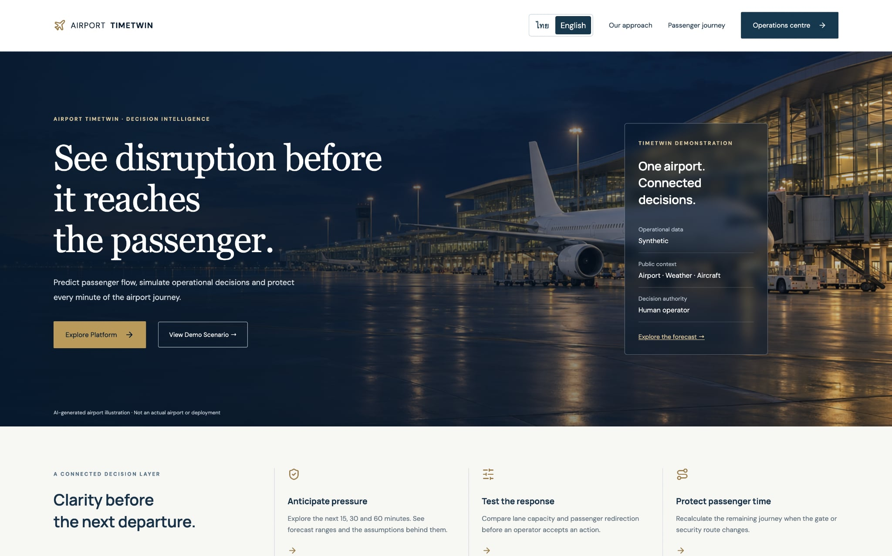
ผู้ใช้ใหม่เริ่มจากหน้า Landing เพื่อเข้าใจคำสัญญาของระบบ: anticipate pressure,
test response และ protect passenger time หน้า นี้ไม่ได้คำนวณคิวเอง ปุ่ม
Operations centre ไปที่ /overview ส่วน
View Demo Scenario ไปยัง guided demonstration
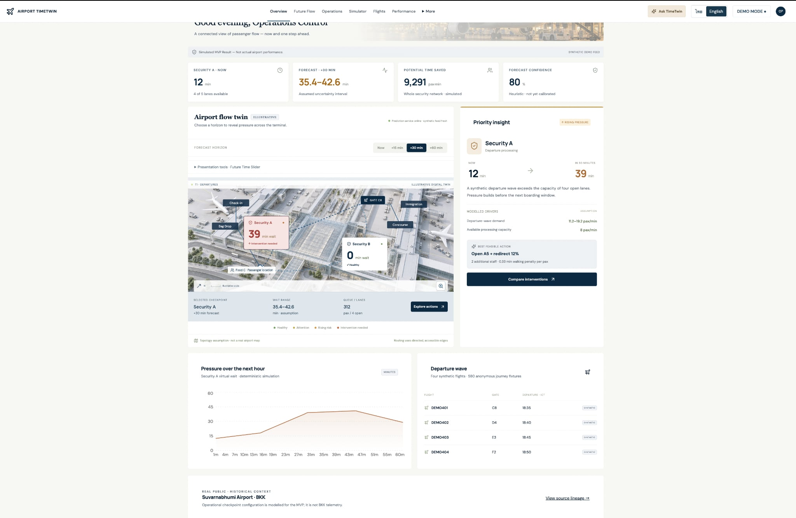
หน้า /overview เป็น command overview สำหรับ operator แสดง
KPI, terminal map แบบ illustrative, Security A/B, current wait, +30
forecast, confidence, เที่ยวบิน และ priority insight การตัดสินใจในหน้านี้คือ
“ควรไปวิเคราะห์สถานการณ์ใดต่อ” ไม่ใช่การสั่งเปิดเลนทันที
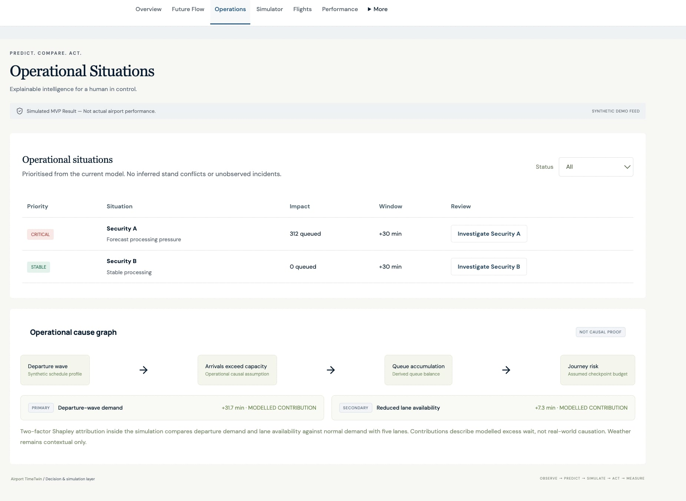
หน้า /operations เปลี่ยน forecast ให้เป็น work queue ของ
operator เช่น Security A เป็น CRITICAL, Security B เป็น
STABLE และมี time window +30 นาที ปุ่ม Investigate
เปิดรายละเอียดเหตุผลเชิง model เช่น demand wave → capacity exceeded → queue
accumulation → journey risk ด้านล่างเป็น model attribution ไม่ใช่ causal
proof จากโลกจริง
หน้า /future ใช้ map และ horizon selector เพื่อดูผลที่ +15, +30
และ +60 นาที ผู้ใช้เลือก checkpoint เพื่อดู queue pressure ตามอนาคต
ค่าในหน้านี้มาจาก forecast() และ AirportMap
ไม่ใช่ภาพ floor plan ที่สำรวจจริง
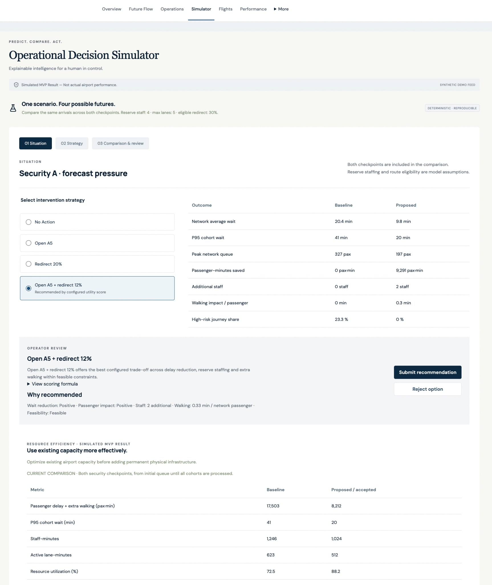
หน้า /simulator คือพื้นที่ทดลองมาตรการ ผู้ใช้เลือก No Action, Open
A5, Redirect 20% หรือแบบผสม จากนั้นดู baseline/proposed, average wait, P95,
queue, staff, walking impact, feasibility และ score ระบบใช้ demand
เดิมทุกทางเลือกเพื่อให้การเปรียบเทียบยุติธรรม ปุ่ม custom simulation ส่งค่าจาก sliders
ไปให้ engine แต่ยังไม่เปลี่ยน state จนกด submit decision
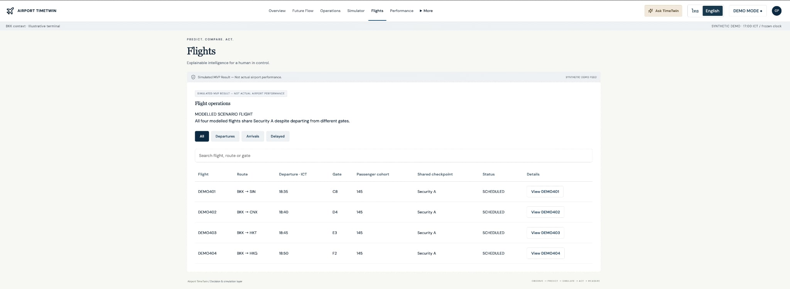
หน้า /flights แสดงเที่ยวบิน DEMO401–DEMO404, route, gate,
เวลาออก, passenger cohort และสถานะ ตารางนี้ช่วยให้ operator เห็นว่า departure
wave ใดแชร์ Security A การกด View เปิด ground handling, baggage และ gate
events ทั้งหมดเป็น fixture จำลอง ไม่ใช่ commercial schedule จริง
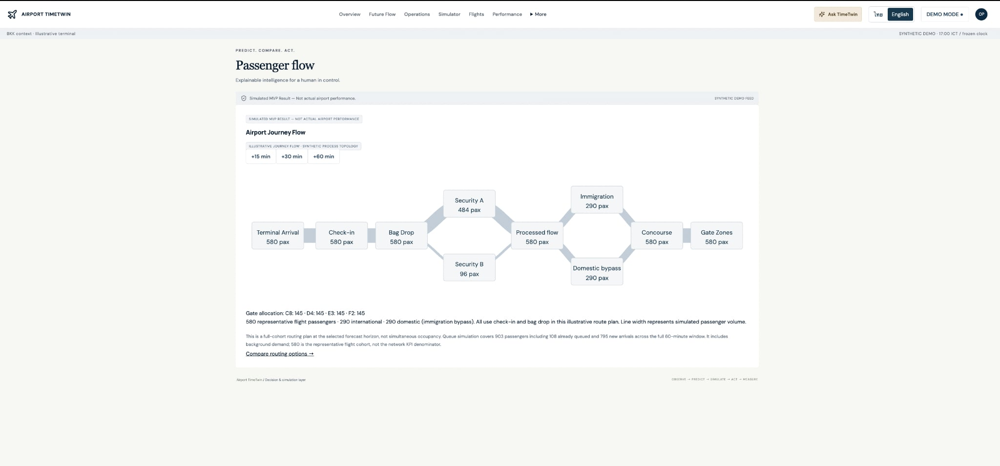
หน้า /passenger-flow แสดง flow จาก terminal arrival →
check-in → bag drop → Security A/B → immigration/domestic bypass →
concourse → gate ผู้ใช้เลือก +15/+30/+60 เพื่อดู scenario horizon
ความหนาของเส้นเป็น simulated passenger volume ไม่ใช่ sensor count
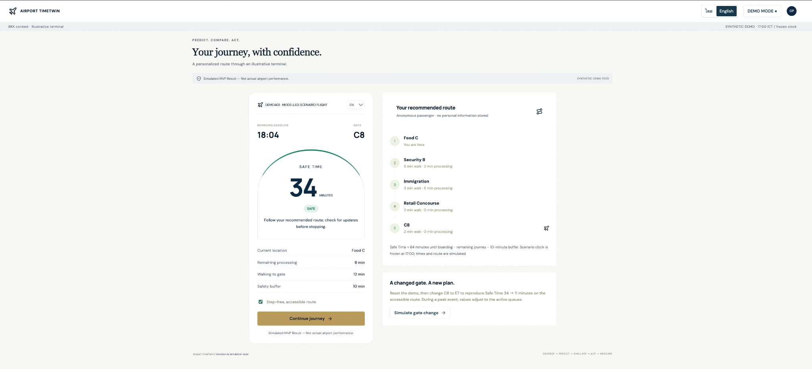
หน้า /journey ให้มุมมองของ passenger หน้าการ์ดแสดง deadline,
gate, Safe Time และ action ปัจจุบัน ด้านข้างแสดงเส้นทางแบบ step-free จาก node
ปัจจุบันไป gate เมื่อกด gate change ระบบคำนวณ route และ Safe Time ใหม่ ตัวอย่าง
C8 → E7 เป็นสถานการณ์จำลอง ไม่ใช่ข้อมูล itinerary ของคนจริง
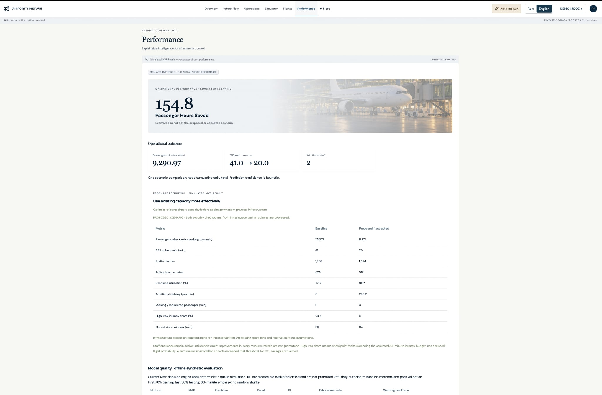
หน้า /performance ตอบคำถาม “มาตรการที่เลือกสร้างผลอย่างไร”
แสดง passenger-minutes saved, P95 before/after, additional staff,
resource efficiency และตาราง offline evaluation ค่าเหล่านี้เป็นผลจาก scenario
เดียวและ synthetic history ไม่ใช่ KPI ที่วัดจากสนามบินจริง
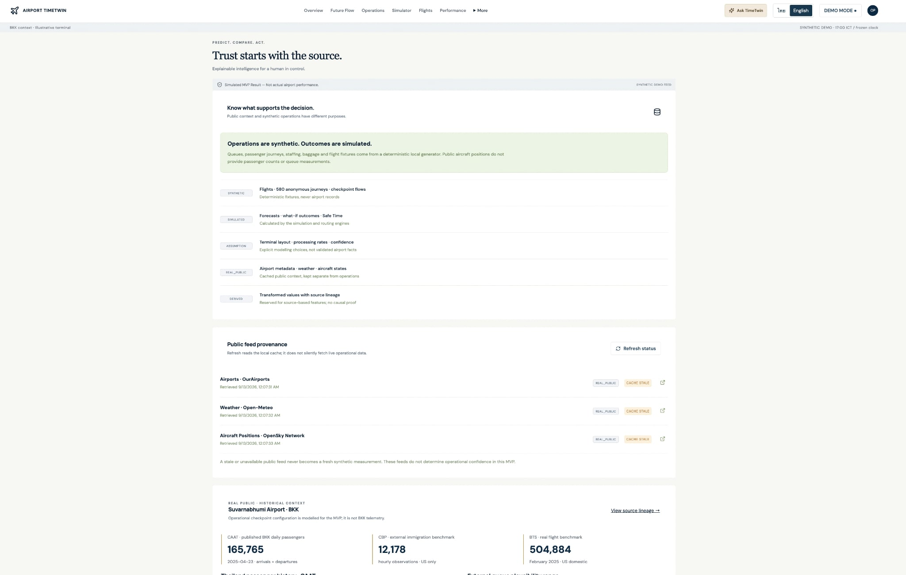
หน้า /sources ทำหน้าที่สร้างความเข้าใจเรื่อง provenance แยก
REAL_PUBLIC, SYNTHETIC,
SIMULATED, ASSUMPTION และ DERIVED
พร้อมแสดง provider, freshness, record count และ source link
ผู้ใช้ควรเปิดหน้านี้ก่อนตีความตัวเลขใน Overview
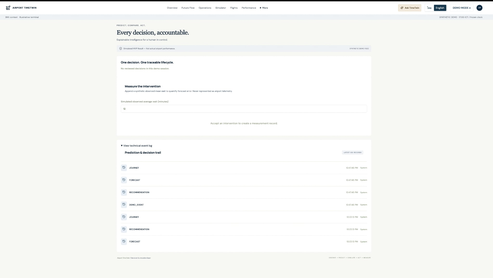
หน้า /app/audit แสดงว่าใครตัดสินใจอะไร เหตุผลอะไร scenario
version ใดถูกใช้ และผลจำลองหลัง action เป็นเท่าไร ส่วน measurement เป็น
synthetic observation ใน Demo เพื่อทดลอง error tracking
ไม่ใช่ผลการตรวจวัดจริง
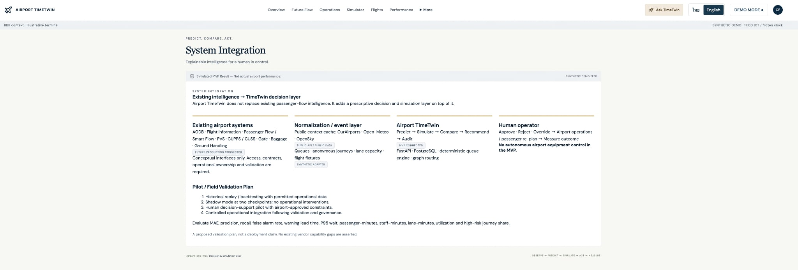
หน้า /integration อธิบายขอบเขตการเชื่อมต่อในอนาคต เช่น
AODB/FIDS, baggage, gate และ human operator โดยแยก integration concept
ออกจากระบบที่เชื่อมต่อจริงใน prototype หน้า นี้เป็น roadmap และ contract
ไม่ใช่หลักฐานว่า connector production มีอยู่แล้ว
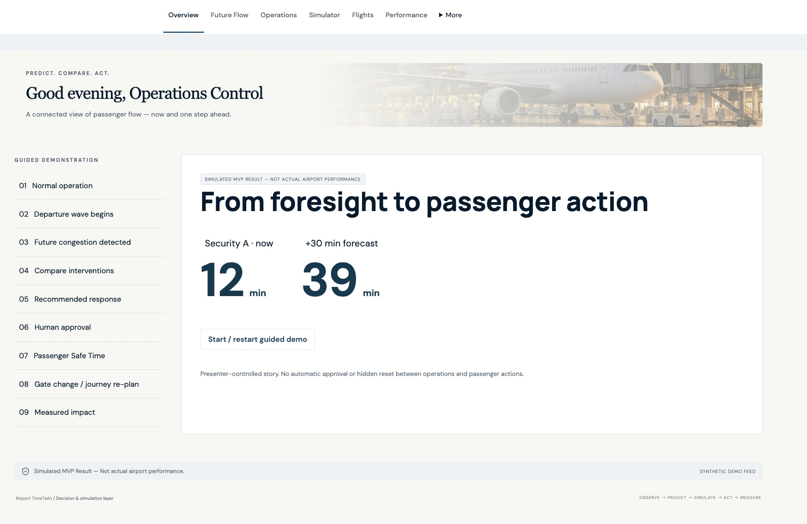
หน้า /demo ใช้เล่าเรื่องตามลำดับ: normal operation → departure
wave → future congestion → compare interventions → recommended response
→ human approval → passenger Safe Time → gate change/re-plan → measured
impact เหมาะสำหรับการนำเสนอ เพราะผู้พูดควบคุม step และอธิบาย data boundary
ได้ทีละจุด
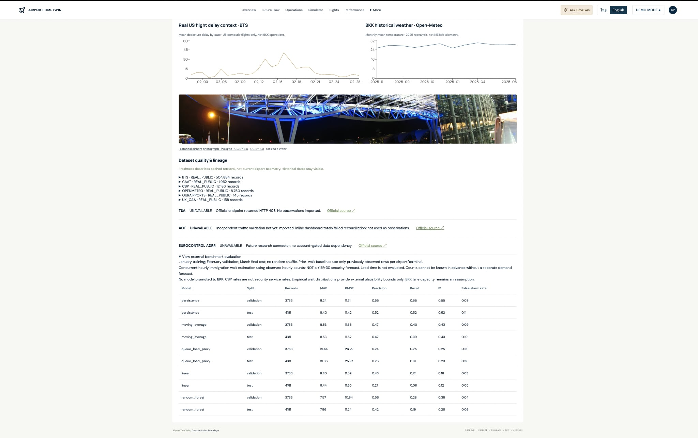
ภาพนี้เป็นมุมมอง Sources แบบละเอียด แสดง quality table, period, geography, missing/duplicate และ benchmark charts เป็นหลักฐาน provenance ของ public context ไม่ใช่หลักฐานว่า operational queue เป็นข้อมูลจริง
ทุก operational table มี id และ source_type
เป็น field กลาง source_type ใช้บอก provenance ของแถวนั้น ส่วน
field ที่เขียนเป็น @table ใน schema คือ foreign key ไปยัง
table.id ตารางหลักจึงไม่ได้เก็บค่าในหน้าเว็บแบบลอย ๆ แต่ถูก seed →
อ่านเข้า engine → แปลงเป็น API response → แสดงผลบน UI
| ตาราง | Field สำคัญ | ข้อมูลมาจากไหน | ใช้ทำอะไร |
|---|---|---|---|
airports |
iata, icao, airport_name,
latitude, longitude,
timezone |
seed synthetic (TWT/ZZTW) หรือ public adapter ใน full
pipeline |
ระบุ airport context และผูก weather/metadata |
flights |
flight_number, origin,
destination, scheduled_departure,
estimated_departure, gate,
status |
seed สี่เที่ยวบิน DEMO401–404 | สร้าง departure wave, แสดง flight board และผูก passenger/baggage/gate |
aircraft_positions |
timestamp, flight_id,
latitude, longitude, altitude,
ground_speed, heading |
synthetic fixture; OpenSky เป็น optional context | แสดง movement context; ไม่คำนวณ passenger queue |
weather |
timestamp, airport_id,
temperature, precipitation,
wind_speed, visibility,
weather_risk_score |
synthetic seed หรือ Open-Meteo cache | context เท่านั้น; ไม่เปลี่ยน Security capacity โดยอัตโนมัติ |
checkpoint |
checkpoint_type, terminal,
zone, maximum_lanes |
seed illustrative terminal | กำหนดจุดบริการและเพดาน lane |
lane_status |
timestamp, checkpoint_id,
lane_id, status,
capacity_pax_min, staff_count |
seed; lane A5 เริ่ม unavailable | ใช้ตรวจ open lanes และ capacity |
passenger_flow |
timestamp, checkpoint_id,
passenger_arrivals, passenger_departures,
queue_length, average_wait_min,
p95_wait_min |
seed historical fixture | flow history และหน้า Passenger Flow; engine peak ใช้ arrival profile
ที่กำหนดใน engine.py |
passenger_journey |
anonymous_passenger_id, flight_id,
current_node, journey_state,
boarding_deadline, safe_time_min,
risk_level |
สร้าง 580 anonymous journeys | เลือก passenger ตัวอย่างและคำนวณ route/Safe Time ใหม่ |
airport_graph |
from_node, to_node,
distance_m, walking_time_min,
accessible, direction,
capacity |
edges illustrative ใน engine.py และ seed |
สร้าง directed accessible route ไป gate |
| ตาราง | Field สำคัญ | เขียนเมื่อใด | ใช้ต่อในขั้นตอนใด |
|---|---|---|---|
operational_events |
timestamp, event_type,
entity_type, entity_id, actor,
status, metadata |
โหลด forecast, simulation, demo event และ human decision | เก็บ input snapshot, session UUID, output และ lineage ของเหตุการณ์ |
predictions |
target, forecast_horizon,
predicted_value, lower_bound,
upper_bound, confidence,
model_version, event_id |
เมื่อสร้าง overview/checkpoint/recommendation/journey prediction | แสดง forecast +30 และผูก prediction กับ event ต้นทาง |
recommendations |
prediction_id, action,
expected_impact, cost,
constraints, score, accepted,
decision, reason, actor |
เมื่อเรียก /api/recommendations |
เก็บทางเลือกและ human decision lifecycle |
intervention_results |
recommendation_id, before,
after_predicted, after_actual,
passenger_minutes_saved, prediction_error,
result |
เมื่อ Accept/Override และเมื่อวัดผล | แสดง before/after และ prediction error |
audit |
prediction_id, event_id,
human_decision, action_taken,
actual_outcome, prediction_error,
result |
ทุก demo event และ decision | หน้า Decision Log, audit trail และ review ย้อนหลัง |
| ตาราง | Field | หน้าที่ |
|---|---|---|
demo_sessions |
id, peak, lanes,
redirect, gate, version,
stale, updated_at |
state แยกตาม browser session; ใช้สร้าง Scenario
ก่อนคำนวณทุก request |
demo_state |
peak, lanes, redirect,
gate, version, updated_at |
legacy/global compatibility state และ health check |
| ค่าที่ผู้ใช้เห็น | อ่านจาก | คำนวณ/แปลงอย่างไร | แสดงที่ไหน |
|---|---|---|---|
| Current wait | DemoSession + engine.forecast() |
queue เริ่มต้น ÷ lanes × service rate | metric Security A/B |
| +15/+30/+60 forecast | Scenario + arrivals() +
simulate() |
minute-step queue และ horizon row | forecast card/map |
| Lower/upper bound | prediction output | heuristic spread; fresh/stale confidence | uncertainty interval |
| Risk level | simulated wait | threshold GREEN/YELLOW/ORANGE/RED | priority/situations |
| Root causes | Scenario counterfactual |
two-factor model attribution | priority insight |
| Best feasible action | compare() |
weighted score + constraints | recommendation card |
| Flights | flights |
serialize fixture ตาม session scenario | flight table |
| Safe Time | passenger_journey + airport_graph +
Scenario |
deadline − processing − walking − buffer | Passenger Journey |
| Public context | public normalized tables/cache | server-side aggregates | Sources/Overview context panel |
DemoSession
├─ peak, lanes, redirect, gate, version, stale
↓
Scenario
├─ arrivals() → demand profile
├─ simulate() → queue, wait, P95, throughput, cost
├─ journey() → accessible route, walking, Safe Time
└─ compare() → options + score + feasible
↓
operational_events (input_snapshot + predicted_outcome)
↓
predictions (target + horizon + bounds + confidence)
↓
recommendations (action + constraints + score)
↓ human Accept / Reject / Override
intervention_results + auditสมมติ row state มี lanes=4, peak=true, และ
engine ใช้ service_rate=2:
capacity = lanes × service_rate = 4 × 2 = 8 pax/min
queue_next = max(0, queue_current + arrivals - capacity)ถ้าผู้ใช้เลือก redirect 20% ระบบแบ่ง arrival เป็น:
Security A arrivals = arrivals × (1 - 0.20)
Security B arrivals = Security B baseline + arrivals × 0.20จากนั้น simulate() คำนวณ wait ของแต่ละ FIFO cohort, รวม
queue area เป็น passenger-minutes และส่งค่าไป compare()
เพื่อหาคะแนน เมื่อผู้ใช้กด Accept ระบบเก็บ before,
after_predicted, action และ reason ลง
intervention_results/audit ก่อนเพิ่ม
version ของ session
สถานะเอกสาร: เอกสารนี้แยกข้อเท็จจริงจากข้อสมมติอย่างชัดเจน และไม่ควรใช้เป็น approval สำหรับการ deploy ในสนามบินจริงโดยไม่มี data owner, security review, operational validation และ safety governance
README.md, docs/architecture.md, docs/assumptions.md, docs/data-sources.md ในคอมมิต 386d911docs/verification.md, docs/acceptance.md, docs/evaluation.md, docs/project-handoff-th.md ในคอมมิต 386d911scripts/experiments/generate_validation_pack.py และ backend/app/trust_service.py ในคอมมิต 386d911data/cache/queue-benchmark.json, data/cache/onetrustx-validation-*.csv (ไฟล์แคชในเครื่อง ไม่ได้ track ใน git)